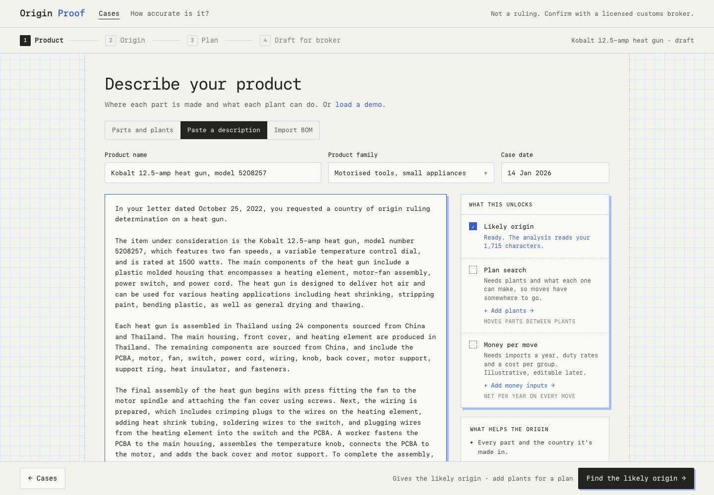
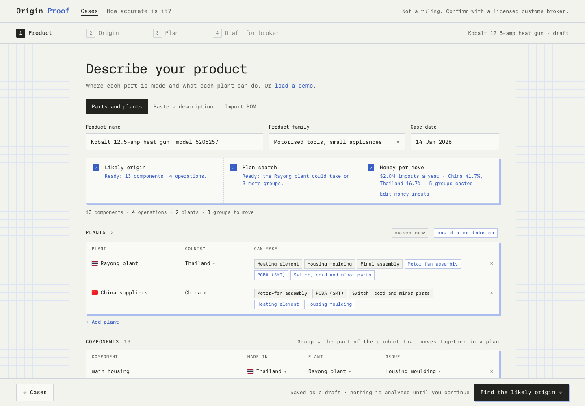
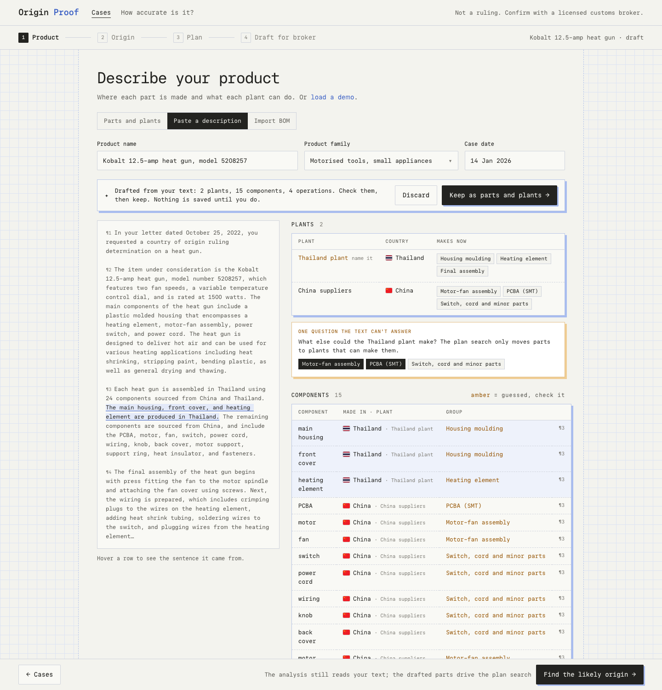

Ideas taken from Altana and improved. Altana lists Good / Better / Best data tiers for each result in its help docs, and keeps AI-extracted data as drafts until someone reviews it. Here the tiers show live while you type, and pasted text can become editable parts and plants. All three frames use the heat-gun case: the facts text, the product and its economics.



B on all three tabs, plus C on Paste if the backend can add the extract endpoint. With C, Paste can reach the plan search too, so every tab ends in the same strip.